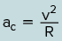
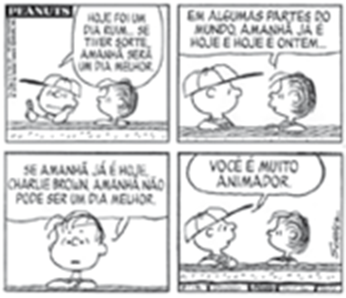

A criação e utilização de produtos cartográficos apresentou uma grande transformação ao longo do tempo.
Heritage Images/Getty Images, TY Lim/Shutterstock.com
Neste capítulo, vamos tratar da produção e da interpretação de mapas, incluindo as técnicas de confecção, os limites da representação e os diferentes usos, seja no passado, seja no presente, além das possibilidades de expansão dessa ciência em um futuro próximo.
O mapa do mundo mais antigo que se conhece tem cerca de 2 500 anos. Ele foi encontrado no deserto de Sippar, no Iraque, no final do século XIX, e é feito de argila. Depois de interpretada a escrita cuneiforme nele presente, foi possível entender que se trata de uma representação do mundo conhecido pelos babilônicos, ou seja, basicamente a região da Mesopotâmia, entre os rios Tigre e Eufrates.
Mas, segundo Jerry Brotton, em seu livro Uma história do mundo em doze mapas, há peças arqueológicas muito mais antigas (cerca de 25 mil anos) que continham tentativas de produzir representações cartográficas da realidade, incluindo algumas características dessas áreas, como os locais conhecidos, os trajetos, os animais e os vegetais. Claro que, na época, não existiam as noções de Cartografia e nem mesmo a palavra “mapa”, mas é fato que há, nos seres humanos, uma tendência muito antiga de querer distribuir de forma gráfica os elementos no espaço. Ao que tudo indica, isso faz parte da organização do nosso próprio aparelho cognitivo e da nossa forma de pensar e representar o mundo à nossa volta.
Atualmente, a Cartografia não se limita aos estudos geográficos, apesar de relacionarmos os mapas a essa ciência. Ao contrário, muitos campos de estudo e de trabalho podem e devem incorporá-la, como a História, a Sociologia, a Biologia, a Arquitetura, a Engenharia e a Medicina, entre tantos outros. Na prática, qualquer trabalho ou pesquisa que precise avaliar a espacialização de fenômenos naturais ou processos sociais tem, na Cartografia, uma ferramenta indispensável.
Neste capítulo, vamos tratar da produção e da interpretação de mapas, incluindo as técnicas de confecção, os limites da representação e os diferentes usos, seja no passado, seja no presente, além das possibilidades de expansão dessa ciência em um futuro próximo.
Descreva pelo menos duas diferenças entre os produtos cartográficos apresentados anteriormente.
É possível dizer que um deles é mais verdadeiro do que o outro? Justifique sua resposta.
Neste capítulo serão abordadas as habilidades EM13CHS103,
EM13CHS106.
Elementos do mapa
Os mapas são representações feitas a partir de visões de mundo preponderantes em uma determinada época ou lugar, carregando, portanto, características de tais perspectivas. Os mapas medievais, por exemplo, apresentavam particularidades da visão religiosa e mitológica.
Atualmente, com exceção dos mapas que têm como referência propostas alternativas, os produtos da Cartografia se baseiam em uma visão científica do mundo. Nesse contexto, os discursos religiosos, mitológicos e artísticos têm como objetivo ampliar as interpretações e significados para gerar reflexão e emoção. O discurso científico, por sua vez, tem como uma de suas principais características evitar ao máximo as ambiguidades, ou seja, garantir que haja apenas uma possibilidade de interpretação para aquilo que foi dito, escrito ou representado graficamente.
Na Cartografia, essa busca se dá pelo uso de convenções cartográficas, ou seja, padronizações nas formas de representação, determinando elementos gráficos e linguísticos para passar a mensagem de forma menos ambígua possível. Vejamos, portanto, quais são os principais elementos de um mapa.
Para começar, é importante que haja elementos de orientação e de localização, principalmente nos mapas que representam aspectos como a distribuição espacial de cidades, rios, unidades de relevo, características climáticas e de vegetação, atividades econômicas, entre outros. Nesse contexto, quando se trata de orientação, geralmente é utilizada a indicação da direção norte, podendo haver distinção entre diferentes “nortes”, sobretudo o norte magnético e o geográfico em mapas mais técnicos. Já para a localização, são indicados alguns meridianos e paralelos e seus respectivos valores de longitude e latitude.
Todo mapa deve ter um título que indica o tema tratado e a área representada. Normalmente, nós os dividimos em dois tipos: sistemáticos e temáticos. Os primeiros são mapas de base, que têm como objetivo representar os aspectos físicos mais fundamentais do terreno, como a localização de cidades, estradas, ferrovias, aeroportos, rios, lagos e mares, além dos pontos de altitude. Estes são chamados de sistemáticos devido ao cuidado com a precisão da localização, podendo ser utilizados para estudos e trabalhos que necessitem de tal exatidão, como obras de engenharia ou de planejamento urbano e ambiental. Os melhores exemplos de mapas sistemáticos são as cartas topográficas, cujo título será apenas o nome da região representada, uma vez que não há um tema específico sendo abordado.
Os mapas temáticos, por sua vez, são aqueles que representam um tema que vai além da mera localização dos elementos citados anteriormente. Nesse grupo, podem ser produzidos mapas dos mais variados assuntos, contanto que apresentem uma distribuição espacial. Em Geografia, os mais comuns são relacionados à população, à urbanização, à indústria, à agricultura, ao relevo, ao clima, à vegetação, aos solos, à estrutura geológica e às atividades econômicas. Nos mapas temáticos, o título deve conter o tema representado e, quando necessário, a data dos dados utilizados. Além disso, é importante inserir a fonte das informações.
Outro elemento fundamental para todo mapa é a legenda, na qual são graficamente definidos os símbolos, as cores e as linhas utilizados para retratar os dados do tema em questão. Vale ressaltar que existem várias formas de representação que se adequam ao tema e aos tipos de dados tratados no mapa.
Taxa de desemprego nos países da União Europeia – outubro de 2018
Mapa temático da taxa de desemprego na União Europeia.
Fonte: EuroGeographics Association for the administrative boundaries. “Taxa de desemprego”. EUROSTAT, out. 2018. Disponível em: https://ec.europa.eu/eurostat/web/main/data/database. Acesso em: 13 jul 2021.
Antes de continuarmos, é interessante destacar que, em um mapa temático, podem ser representados diferentes tipos de dados, que estão divididos em três grupos: qualitativos, ordenados e quantitativos.
Técnicas de representação de dados em um mapa.
MARTINELLI, Marcelo. Cartografia temática: caderno de mapas. São Paulo: Editora da Universidade de São Paulo, 2003.
Os dados qualitativos são aqueles que demonstram apenas uma diferença entre os elementos representados, a qual não pode ser quantificada nem colocada em uma ordem; alguns exemplos são os tipos de clima no mundo ou a divisão política brasileira.
Os dados ordenados são aqueles que, como o nome sugere, podem ser colocados em uma ordem. Muitos mapas temáticos são ordenados, pois sua leitura é relativamente simples. Isso se deve ao fato de que eles são baseados em generalizações, ou seja, as áreas representadas são divididas em grupos, que, por sua vez, são colocados em ordem e retratados, por exemplo, com cores e tons diferentes. Nesses mapas, não há uma preocupação em saber o valor exato dos dados em cada área, mas apenas a posição deles na ordem estabelecida. São exemplos de mapas temáticos ordenados aqueles que retratam os seguintes assuntos: população absoluta e relativa, taxa de urbanização, Produto Interno Bruto (PIB), Índice de Desenvolvimento Humano (IDH) e níveis de temperatura, de altitude e de chuva.
Proporção da população residindo em domicílios sem acesso a abastecimento de água por rede geral, por Unidades da Federação – Brasil – 2017
Exemplo de mapa temático ordenado.
Fonte: IBGE. Pesquisa Nacional por amostra de domicílios contínua 2017. In: INSTITUTO BRASILEIRO DE GEOGRAFIA E ESTATÍSTICA. Síntese de indicadores sociais: uma análise das condições de vida da população brasileira 2018. Rio de Janeiro: IBGE, 2018. (Adapt.).
Já os dados quantitativos são aqueles cujo valor de cada área pode ser percebido, se não de forma exata, pelo menos de maneira mais aproximada. Tais dados também podem ser retratados de modo ordenado, e vice-versa, mudando apenas a forma de representação. Esse tipo de representação dá mais importância à precisão e, para chegar a esse resultado, utilizam-se técnicas como formas geométricas desenhadas de maneira proporcional aos dados representados, como círculos, quadrados, triângulos ou até mesmo setas cuja área (aresta ou raio) seja proporcional aos valores que representam.
Comércio internacional de mercadorias – 2006
Exemplo de mapa temático quantitativo.
Fonte: Estatísticas do Comércio Internacional 2006, Organização Mundial do Comércio (OMC). In: Le Monde Diplomatique Brasil: Atlas do meio ambiente. p. 20.
Entre as representações quantitativas, estão as anamorfoses, nas quais as áreas são distorcidas para ficarem proporcionais aos valores representados. Nesses casos, a precisão dos dados não é tão exata, mas a informação é passada de forma bastante eficiente.
Produto Interno Bruto por microrregião – Brasil – 2015
Técnica da anamorfose representando o Produto Interno Bruto de cada microrregião do Brasil.
Por fim, outra técnica de representação cartográfica muito utilizada é a das isolinhas, ou seja, linhas que indicam os pontos do mapa e que apresentam o mesmo valor para um dado. Temos como exemplo as isóbaras (pontos de mesma pressão atmosférica), as isoietas (pontos de mesmo total anual de chuva), as isotermas (pontos de mesma média de temperatura) e as isoípsas ou curvas de nível (pontos de mesma altitude).
Pressão atmosférica em janeiro
Mapa de pressão atmosférica, representada pelas isóbaras.
Fonte: “Distribuições observadas de vento e pressão na superfície”. In: GRIMM, Alice Marlene. “Meteorologia básica - notas de aula”. Departamento de Físca UFPR, set. 1999. Disponível em: http://fisica.ufpr.br/grimm/aposmeteo/cap8/cap8-2.html. Acesso em: 13 fev. 2019.
Entre as isolinhas, as curvas de nível são as mais utilizadas. Elas são estratégicas para representar o relevo, que é um desafio para a Cartografia, pois, enquanto a realidade tem três dimensões, o mapa tem apenas duas. Os mapas de curvas de nível, também chamados de topográficos ou hipsométricos, são formados a partir de uma projeção das linhas de altitude que poderiam ser visualizadas em um perfil de relevo para o mapa plano.
Curvas de nível, ou isoípsas, utilizadas como forma de representação do relevo..
Percepção da inclinação na representação de curvas de nível. Observe que quanto mais próximas as linhas estiverem umas das outras, maior será a inclinação da área representada.
Além dos elementos do mapa já citados e que compõem as convenções cartográficas, precisamos tratar ainda da escala e das projeções. Faremos isso a seguir, separadamente, devido à sua complexidade.
Escala cartográfica
Os mapas devem apresentar menos informações do que a realidade contém. Nesse sentido, todo mapa busca tornar mais simples o que é real. Esse recurso é chamado de generalização e se aproxima das médias aplicadas na Matemática e na Estatística.
Ao reduzirmos a realidade para representá-la em um mapa, perdemos algumas informações, mas criamos um produto cartográfico útil para fins de estudo, ensino ou intervenções na realidade. Porém, nesse processo, há dois pontos importantes. Primeiramente, temos que saber o quanto devemos reduzir para ter uma noção do tamanho original da área representada. Para isso, utilizamos a escala. Outro ponto é que temos que saber o quanto podemos reduzir de acordo com o uso que pretendemos fazer do mapa. Vejamos, a seguir, um pouco melhor esses aspectos.
A escala indica, de forma gráfica ou numérica, a relação de proporção entre a realidade e sua representação no mapa. A escala numérica não tem uma unidade específica, ou seja, ela não é apresentada em centímetros, metros ou quilômetros, sendo simplesmente uma proporção, que é escrita da seguinte maneira:
Nesse tipo de escala, o número 1 indica uma medida (em qualquer unidade) no mapa, e o número que vem depois dos dois-pontos refere-se à dimensão equivalente na realidade, ou à quantidade de vezes que o tamanho real foi reduzido para ser representado. Portanto, quanto maior for esse número, menos detalhado será o mapa.
... nas frações, há o numerador e o denominador e que, quanto maior for esse último, menor é o número representado. Por exemplo:
12
18
numeradordenominador
O mesmo ocorre com a escala: quanto maior for o número após os dois--pontos, que representa o denominador, menor é a escala.
A escala gráfica, por sua vez, costuma representar a relação entre um centímetro no mapa e sua correspondência na realidade. É comum que ela apareça sem explicitar claramente a medida compreendida entre dois valores, como na figura a seguir, que é um centímetro. Nesse caso, podemos descobrir tal medida com uma régua, verificando qual distância no mapa representa o valor indicado na escala.
Quanto aos usos dos mapas e a relação com a escala, a regra geral é: quanto mais detalhes tiver o terreno, maior deve ser a escala, e quanto maior a abrangência necessária (tamanho da área representada), menor ela deve ser. Nesse ponto, é necessário redobrarmos a atenção, pois a denominação “escala grande” e “escala pequena” pode nos confundir. Escala grande é aquela em que o número que vem depois dos dois-pontos na escala numérica é menor, uma vez que ele indica a quantidade de vezes que a realidade foi reduzida. As escalas menores, por sua vez, são aquelas cujo número depois dos dois-pontos é maior, significando que a realidade foi muito reduzida para ser representada no mapa.
Escalas grandes
Pequeno detalhamento
Grande abrangência
1:10 000
Mapas com definição suficiente para medida dos imóveis urbanos. Podem ser utilizadas no cálculo de uma área para definição de impostos.
1:50 000
Planejamento urbano.
Escalas pequenas
Pequeno detalhamento
Grande abrangência
1:1 000 000
Planejamento regional.
1:5 000 000 ou menor
Mapa-múndi e uso didático.
Projeções cartográficas
A palavra “projeção” deve ser entendida como uma referência às técnicas matemáticas e geométricas que procuram transpor as formas da elipsoide, elipse em três dimensões que é usada como base geométrica para o mapeamento do planeta, para o mapa, como se as estivessem projetando.
Comparação entre a esfera e a elipsoide.
As técnicas matemáticas e geométricas projetam as formas da elipsoide em um plano.
Fonte: SILVEIRA, Leonard Niero da. Fundamentos de projeção cartográfica. Rio Grande do Sul: Universidade Federal do Pampa. p. 12.
As projeções podem ser divididas em quatro tipos de acordo com a escolha do que será preservado e do que será distorcido em cada mapa. Veja as classificações a seguir.
Conformes ou semelhantes: conservam as formas, sendo mais utilizadas em mapas para a navegação, pelo fato de também preservarem as direções.
Equivalentes: mantêm corretas as proporções entre as áreas, sendo boas para criar mapas nos quais será preciso comparar áreas diferentes em relação a alguma informação, como as extensões territoriais de biomas ou de oceanos.
Equidistantes: apresentam as distâncias proporcionalmente corretas em relação a um ponto da Terra, buscando demonstrar a distância do local escolhido em relação a outros.
Afiláticas ou indeterminadas: distorcem tanto a área quanto a distância e a forma, mas de maneira minimizada, produzindo um mapa mais equilibrado, com o intuito de representar a terra para fins didáticos, por exemplo.
Além da diferença entre os tipos de distorção existentes, as projeções também podem ser divididas com base na relação entre a elipsoide e a figura geométrica na qual suas formas serão projetadas. Isso trará resultados diferentes, que devem ser previstos de acordo com o uso que se quer fazer do mapa. Nesse sentido, as principais formas de projeção são: cilíndricas, cônicas e planas (ou azimutais).
Projeção cilíndrica
Projeção cônica
Projeção plana ou azimutal
Projeção cilíndrica de Peters
Projeção cônica de Albers
Projeção plana polar
Fonte: IBGE, Departamento de Geociências, Coordenação de Cartografia. DANA, P. H. Map projectionoverview. Boulder: University of Colorado, Dept. of Geography, 2000. In: INSTITUTO BRASILEIRO DE GEOGRAFIA E ESTATÍSTICA. Atlas geográfico escolar. 7 ed. Rio de Janeiro: IBGE, 2016. p. 21.
Tipos de projeção de acordo com a figura geométrica utilizada para a produção do mapa.
O ponto ou a linha de contato entre a figura geométrica e a elipsoide guarda a projeção mais próxima da realidade. À medida que nos afastamos dessa linha ou ponto, as distorções aumentam. Assim, uma projeção cilíndrica é boa para representar áreas próximas ao Equador, mas, conforme as latitudes aumentam, as distorções vão ficando cada vez mais exageradas. As projeções cônicas, por sua vez, são ideias para retratar as regiões de latitudes médias. Já as planas são mais utilizadas para a reprodução das áreas polares.
As projeções cilíndricas também podem ser utilizadas em sua forma transversa, ou seja, em vez de o cilindro estar na vertical, tangenciando a Linha do Equador, ele pode ser colocado na horizontal, tendo um meridiano como referência principal. Nesse último caso, toda a faixa do meridiano (e de seu antimeridiano) será representada com o mínimo de distorção. Projeções desse tipo não são usadas para a produção de mapas--múndi, mas sim de mapas de grande escala, regionais. Um exemplo disso é a projeção Universal Transversa de Mercator (UTM), que é uma das mais utilizadas para a produção de mapas técnicos de grande precisão.
Projeção de Mercator
Fonte: IBGE, Diretoria de Geociências, Coordenação de Cartografia. In: INSTITUTO BRASILEIRO DE GEOGRAFIA E ESTATÍSTICA. Atlas geográfico escolar. 7 ed. Rio de Janeiro: IBGE, 2016. p. 23.
Um exemplo clássico da distorção de projeções cilíndricas é a comparação entre as de Mercator e Peters. A primeira, produzida em 1569 pelo cartógrafo e matemático Gerardo Mercator, é cilíndrica conforme e representa bem as regiões próximas à Linha do Equador, tanto na forma como na área. No entanto, nas médias e altas latitudes tais áreas vão ficando muito distorcidas, criando uma falsa impressão de que alguns países do norte da Europa, o Canadá e a ilha da Groenlândia sejam muito maiores do que realmente são.
A projeção de Peters é cilíndrica equivalente e mantém a proporção correta das áreas, mas distorce bastante as formas. Ela foi proposta pelo historiador alemão Arno Peters, em 1973, cujo objetivo explícito era produzir um mapa que questionasse a visão eurocêntrica da projeção de Mercator, que valoriza a Europa, os Estados Unidos e a Rússia, em detrimento dos países do Sul. Quando essa proposta foi feita, em meio à Guerra Fria, havia um movimento internacional conhecido como terceiro- -mundista, que englobava um grande grupo de países subdesenvolvidos com o intuito de questionar a hegemonia dos Estados Unidos e da União Soviética no mundo. Por isso, o mapa de Peters também ficou conhecido como o mapa-múndi terceiro-mundista.
Já Arthur Robinson, em 1963, fez a projeção que leva seu nome. Ela é afilática, ou seja, distorce as áreas, formas e distâncias, mas de maneira minimizada. Uma de suas diferenças em relação às duas primeiras, por exemplo, é o fato de os meridianos serem representados de maneira curvada e se aproximando conforme se afastam da Linha do Equador.
Fonte: IBGE, Diretoria de Geociências, Coordenação de Cartografia. In: INSTITUTO BRASILEIRO DE GEOGRAFIA E ESTATÍSTICA. Atlas geográfico escolar. 7 ed. Rio de Janeiro: IBGE, 2016. p. 24.
Fonte : IBGE, Departamento de Geociências, Coordenação de Cartografia. DANA, P. H. Map projection overview. Boulder: University of Colorado, Dept. of Geography, 2000. In: INSTITUTO BRASILEIRO DE GEOGRAFIA ESTATÍSTICA. Atlas geográfico escolar. 7 ed. Rio de Janeiro: IBGE, 2016. p.21.
Cartografia digital
Atualmente, a produção de mapas começa com a obtenção de informações espaciais. Contudo, até o início do século XIX, os dados necessários eram levantados por meio de visitas a campo, da observação do céu, do uso de bússolas e de outros instrumentos de localização e medição. Do final desse período em diante, principalmente após a Segunda Guerra Mundial, passou a ser desenvolvido o sensoriamento remoto
, ou seja, o uso de sensores que podem captar as informações necessárias à confecção de mapas a partir de grandes distâncias.
As primeiras formas de sensoriamento remoto foram as fotografias aéreas. Já a partir das décadas de 1960 e 1970, teve início o desenvolvimento dos satélites artificiais – máquinas construídas pelos seres humanos e colocadas em órbita por meio de foguetes lançadores.
Mais recentemente, empresas vêm desenvolvendo satélites de altíssima resolução, como é o caso do DigitalGlobe, fornecedor das imagens para o Google Earth e o Google Maps, além do programa NASA World Wind, da agência espacial estadunidense. A resolução de um satélite se refere ao tamanho mínimo dos objetos que os sensores e câmeras conseguem registrar. Assim, quanto menor o tamanho deles, maior será a resolução. Na década de 1980, as melhores resoluções dos satélites imageadores giravam em torno de 30 metros, como era o caso do Landsat 4. Já o último satélite lançado pela DigitalGlobe em 2016, o WorldView-4, fornecia imagens com resolução de 31 centímetros. Ele sofreu uma falha em 2019, e a empresa não conseguiu recuperá-lo.
MAIS
Instituto Nacional de Meteorologia
No site do Inmet, é possível acessar imagens feitas pelos satélites Goes (Geostationary Operational Environmental Satellite), dos Estados Unidos. Por meio delas, podemos observar ot comportamento da atmosfera acima de qualquer região do Brasil. Essas imagens são atualizadas em intervalos de 10 ou 20 minutos, permitindo-nos perceber a movimentação das massas de ar. Além disso, no site, conseguimos escolher diferentes tipos de representações para dar maior destaque para alguns elementos, como vapor d’água, temperatura ou cobertura de nuvens.
O Brasil desenvolve, desde 1988, uma parceria com a China para a produção de satélites imageadores. O CBERS (Satélite Sino-Brasileiro de Recursos Terrestres), como é chamado o programa, lançou seis satélites até o ano de 2019. O CBERS-2, por exemplo, lançado em 2003, é equipado com uma câmera cuja resolução é de 260 metros, enquanto o CBERS-4A, lançado em 2019, possui câmeras de resoluções entre 2 e 55 metros.
As variações de resolução não se referem apenas à tecnologia disponível. Nos dias de hoje, mesmo com um maior desenvolvimento dos instrumentos imageadores, pode-se optar por imagens de menor resolução, dependendo do uso que se quer fazer delas.
Essa é a mesma lógica da escolha das escalas, já estudada neste capítulo. Dessa forma, grandes escalas, nas imagens de satélite, exigem maior resolução e são usadas principalmente para estudos de áreas urbanas. As pequenas e médias escalas, por sua vez, oferecem um detalhamento menor, mas possuem maior abrangência, podendo ser utilizadas para estudos regionais, que não necessitam de imagens de satélite com altíssimas resoluções.
Manaus e o encontro entre os rios Negro e Solimões. Imagem do CBERS-2, com resolução de 260 metros.
CCD/CBERS-2/INPE
Manaus e o encontro dos rios Negro e Solimões. Imagem do CBERS-4, com resolução de 10 metros.
CBERS-4/OBT/INPE (CC BY-SA 2.0)
Amazonia-1
O primeiro satélite brasileiro desenvolvido, produzido e testado integralmente no país recebeu o nome de Amazonia-1 e foi projetado à órbita terrestre no início de 2021, a partir de uma base de lançamento espacial indiana. O projeto, cuja coordenação é do Instituto Nacional de Pesquisas Espaciais (Inpe), em parceria com a Agência Espacial Brasileira – ambos ligados ao Ministério de Ciência, Tecnologia e Inovações –, permite que o sensoriamento remoto desenvolvido com tecnologia brasileira atenda às demandas específicas do vasto território brasileiro e contribua para enfrentar desafios econômicos e ambientais diversos.
Além do monitoramento da vegetação e do desmatamento, emparticular na região amazônica, o satélite Amazonia-1 tem por missão monitorar, com alta taxa de revisita, o território nacional, a região costeira, o desenvolvimento agropecuário, reservatórios de água e desastres ambientais. A alta taxa de revisita é um atributo importante, já que permite ao satélite disponibilizar uma significativa quantidade de dados de um mesmo ponto da superfície, aumentando a probabilidade de capturade imagens úteis em dias com presença de nuvens. Trata-se, portanto, de valiosa característica para aplicações que exigem resposta rápida, como alertas de desmatamento na Amazônia.
O satélite integra um programa espacial mais amplo: a Missão Amazonia, projeto com ambições de longo prazo que prevê o desenvolvimento e lançamento de mais dois satélites de sensoriamento remoto, Amazonia-1B e Amazonia-2. O projeto como um todo se iniciou em 2002, com a ideia de criação de uma Plataforma Multimissão (PMM), isto é, uma plataforma genérica responsável por prover todos os recursos necessários ao pleno funcionamento de um módulo espacial, independentemente do tipo de órbita espacial, e o qualifica para ser usado em diferentes missões espaciais, adaptável à demanda.
O Amazonia-1 pesa cerca de 640 kg, tem 2,5 metros de altura e envergadura de aproximadamente 7,5 metros com os painéis solares abertos. Esses painéis possuem mais de 6 m² e permitem gerar uma potência da ordem de 1 000 watts ao longo de sua vida útil, planejada para quatro anos. Além disso, cerca de6 km de cabos e 14 mil conexões conectam todos os equipamentos.
Algumas etapas de desenvolvimento do satélite exigiram o esforço simultâneo de até cem profissionais altamente capacitados.
O satélite está orbitando a altitude média de 752 km, faixa orbital dentro da qual operam os satélites de observação terrestre. A altitude pode parecer elevada, porém, a depender da finalidade, satélites podem se situar a até 35 mil km de altitude, como é o caso de satélites de comunicação, responsáveis por distribuir sinais de telefone, internet e televisão, e de localização, como os de GPS. Para o funcionamento de câmeras fotográficas e sensores voltados à observação da Terra, a altitude varia entre 600 e 800 km. Já a órbita do Amazonia-1 é polar, ou seja, desloca-se no sentido norte-sul, cruzando a Linha do Equador em diferentes longitudes com capacidade de mapeamento em faixas de 850 km, resolução de 64 metros e capacidade de fornecer imagens da mesma latitude a cada 5 dias.
Para o desenvolvimento da PMM, aproximadamente 70% dos componentes e equipamentos do satélite foram desenvolvidos pela indústria brasileira. Não se pode dizer, portanto, que a plataforma seja totalmente nacional, já que componentes críticos e de difícil desenvolvimento, como os controles de orientação e órbita, foram importados. No entanto, uma vez operados com sucesso em missões reais, os componentes desenvolvidos no Brasil validam que o país tem capacidade de desenvolver produtos de alto valor agregado e o colocam como potencial fornecedor internacional desses componentes, tais como o sistema de propulsão, o mecanismo de abertura do painel solar e a estrutura de fibra de carbono do satélite. Desse modo, uma das frentes de trabalho que se abre para o programa espacial brasileiro é o desenvolvimento nacional dos componentes importados, bem como estabelecimento de parcerias internacionais.
Além disso, o projeto teve de considerar que o Brasil ainda não tem capacidade de lançar satélites desse porte. Em geral, a concepção de uma PMM desenvolve, simultaneamente, um lançador plenamente adaptado ao equipamento. O Brasil possui uma das mais privilegiadas estações de lançamento de foguetes do mundo, o Centro de Lançamento de Alcântara, situado na latitude 2°18’, hemisfério sul. A maior velocidade linear de rotação da Terra próxima à Linha do Equador pode significar uma economia de até 30% de combustível durante um lançamento. No entanto, a base de Alcântara não comporta foguetes capazes de lançar um satélite com as dimensões do Amazonia-1.
Para evitar que o projeto fosse limitado a estações internacionais específicas, o Inpe desenvolveu uma PMM com possibilidade de ser lançada a partir de diversas estações de lançamento do mundo, para a classe de satélites do Amazonia-1. Nesse sentido, em razão dos custos mais baixos, o satélite foi lançado a partir do Centro Espacial de Satish Dhawan, na Índia.
Todos esses motivos – desenvolvimento bem-sucedido de tecnologia nacional e de uma plataforma adaptável a diferentes demandas e centros de lançamento – tornam o Brasil menos dependente de recursos estratégicos que são desenvolvidos por apenas 20 países no mundo, além de garantir maior sigilo sobre a finalidade e o funcionamento dos satélites que coloca em órbita.
A recepção no Brasil das primeiras imagens produzidas pelo satélite ocorreu em março de 2021. A partir de antenas acopladas no satélite, as imagens coletadas são enviadas para estações de rastreio em Cuiabá (MT), Alcântara (MA) e Cachoeira Paulista (SP) e conectadas ao Centro de Controle de Satélites (CCS) pertencente ao Inpe, em São José dos Campos (SP), por meio de uma rede de comunicação de dados que permite ao CCS receber os dados dos satélites em tempo real.
Além do uso estratégico dos dados coletados pelo Amazonia-1, a expectativa é de que a comunidade científica e toda a sociedade, em geral, usufruam das informações obtidas pelo artefato brasileiro.
Município de Ibotirama (BA). Em uma das primeiras imagens obtidas pelo Amazonia-1, em 3 de março de 2021, é possível observar um trecho do rio São Francisco e áreas de desenvolvimento de atividades agrícolas e de vegetação nativa.
Cartografia digital e tecnologias de geolocalização
O desenvolvimento da cartografia digital ampliou o uso das informações geográficas muito mais do que se imaginava, contribuindo para que esse conhecimento se espalhasse por vários setores da sociedade, seja na economia, na política ou no lazer.
Um bom exemplo disso foi o desenvolvimento dos Sistemas de Informação Geográfica (SIG ou GIS, em inglês), criados a partir da união dos mapas digitais (feitos por meio das imagens de satélite) a uma grande variedade de informações de dimensão espacial. Essa tecnologia trouxe, ainda, a possibilidade de relacionar de forma fácil e rápida diferentes dados e, dessa forma, chegar a conclusões importantes que podem orientar as políticas públicas e as decisões empresariais.
União de informações geográficas em mapas digitais.
Fonte: http://cier.uchicago.edu/gis/gis.htm. In: Ministério dos Transportes. “Sistema de informações cartográficas”. Banco de informações e mapas de transportes. Disponível em: www2.transportes.gov.br/bit/01-inicial/sig.html. Acesso em: 13 jul. 2021.
Entre as áreas beneficiadas por esses sistemas, estão a gestão municipal da saúde pública, o planejamento do transporte coletivo ou da distribuição das escolas, as ações da polícia e de outros agentes da segurança pública, os estudos sobre problemas ambientais, as empresas de marketing dirigido, as decisões empresariais sobre onde investir e assim por diante.
Mas não é apenas entre as pessoas especializadas que a cartografia digital vem fazendo sucesso. O maior exemplo da popularização desse tipo de tecnologia são os aplicativos com geolocalização, disponíveis para smartphones, que indicam qual caminho devemos seguir até a casa de um amigo ou, ainda, traçam o trajeto de nossa corrida ou pedalada, apresentando, posteriormente, o resultado em mapas, perfis de relevo e gráficos. Já quando entramos ou passamos próximos a determinados lugares, como shoppings, museus, restaurantes ou casas de show, alguns aplicativos nos dizem que temos uma boa oportunidade de fotografia ou pedem para que avaliemos o local em questão. Além disso, certos jogos também usam o espaço geográfico da cidade como cenário. E isso tudo é só o começo de um mundo que deve usar cada vez mais a geolocalização na vida cotidiana.
Distribuição dos satélites do sistema GPS em seis diferentes planos orbitais.
Um dos passos mais importantes para esse desenvolvimento foi a criação do Global Position System (GPS), o primeiro Sistema de Navegação Global por Satélite – Global Navigation Satellite System (GNSS), em inglês. Esse projeto foi iniciado pelo departamento de defesa dos Estados Unidos, ainda na década de 1960, mas só atingiu seu pleno funcionamento em 1995.
Esse sistema funciona a partir de uma constelação de satélites, que variam entre 24 e 31, já contando com os reservas. Estes estão distribuídos em seis órbitas diferentes, todas oblíquas em relação à Linha do Equador e em uma altitude aproximada de 20 200 km, de modo que, em qualquer lugar da superfície terrestre, possa haver recepção direta do sinal de pelo menos quatro deles. Então, basta que um aparelho receptor capte os sinais emitidos por tais satélites e, com isso, calcule sua própria posição.
Inicialmente, a ideia era que esse sistema fosse de uso exclusivamente militar para facilitar a localização de tropas e o direcionamento de mísseis guiados, navios, aviões e submarinos. É interessante citar que os sinais emitidos pelos satélites apresentavam um grande erro proposital; assim, quem os captasse sem os aparelhos exclusivos das forças armadas norte-americanas não conseguiria utilizá-los com precisão.
A partir do ano 2000, no entanto, o presidente dos Estados Unidos na época, Bill Clinton, liberou, sob pressão da sociedade, o uso civil com precisão. Essa mudança tornou possível, em um primeiro momento, que técnicos utilizassem o sistema para fazer mapeamentos, estudos de campo ou projetos de engenharia.
Contudo, os aparelhos receptores eram caros e de uso complexo. Então, surgiram os aparelhos GPS automotivos e, posteriormente, houve a popularização dos smartphones. Ao incorporar a eles os receptores de GPS, esses aparelhos tornaram a tecnologia da geolocalização disponível ao público não especializado, que passou a utilizá-la sem precisar entender tecnicamente o seu funcionamento.
Aparelho de navegação GPS para uso técnico.
LorenzoT81/iStockphoto.com
Além disso, o uso da localização geográfica nos celulares foi complementado com outras informações acessíveis por meio da internet de dados móveis. Enquanto sistemas como GPS disponibilizam, sem necessidade de conexão à rede mundial de computadores, dados sobre latitude, longitude e altitude do ponto onde se encontra o usuário do aparelho celular, a conexão destes com a internet permite o acesso a informações sobre os arredores do local em que ele está. Devido a isso, passou a ser possível criar o que vem sendo chamado de realidade aumentada, ou seja, uma visão do espaço, por meio dos smartphones e de outros dispositivos móveis, com mais detalhes do que poderíamos ter a olho nu. No futuro, essa tecnologia tornará possível a existência de carros autônomos, ou seja, guiados por computador a partir da geolocalização.
Você deve estar imaginando o quanto toda essa tecnologia pode ser revolucionária em poucos anos. As possibilidades tecnológicas, econômicas e políticas são imensas. Por isso, há muita gente preocupada em garantir o domínio desse tipo de tecnologia. Nesse contexto, o sistema GPS, dos Estados Unidos, em breve, não será mais o único disponível voltado ao funcionamento de dispositivos com geolocalização.
Durante a Guerra Fria, a União Soviética possuía um projeto concorrente ao modelo estadunidense, que também visava garantir o aprimoramento de seu poder militar. Porém, com a crise do socialismo na década de 1980 e a redução dos investimentos no setor espacial pelo governo soviético, essa iniciativa acabou sendo deixada de lado. Mas, em 2002, esse projeto foi retomado e, atualmente, já atingiu plena cobertura, com 26 satélites no total.
O sistema russo se chama Glonass e, como acabamos de afirmar, é o único que, como o GPS, tem alcance global. No entanto, em breve, mais dois sistemas similares atingirão essa mesma condição: o Beidou, anteriormente chamado de Compass, de origem chinesa, e o Galileo, que está sendo desenvolvido na Europa. Este último é o único que tem um caráter totalmente civil, ao contrário dos outros três, que são de origem militar com uso liberado à população.
A incorporação dos receptores de GPS aos smartphones popularizou a tecnologia da geolocalização.
scanrail/iStockphoto.com
Tecnologias de geolocalização associadas às informações via internet vêm crescendo nas atividades de lazer, compras e turismo.
hakule/iStockphoto.com
Aplicando conhecimentos
1
Uerj 2018 O mapa milenar chinês “Yu Gong” fazia uma divisão esquemática de todo o mundo em cinco zonas retilíneas, organizadas de acordo com os quatro pontos cardeais baseados nos ventos. A civilização encontra-se no núcleo da imagem, destacando o domínio imperial. O grau de barbárie aumenta a cada quadrado que se afasta desse núcleo: governantes tributários, as regiões fronteiriças, os bárbaros “aliados” e, finalmente, a zona selvagem, sem cultura, que incluía a Europa.
Adaptado de BROTTON, J. Uma história do mundo em doze mapas. Rio de Janeiro: Zahar, 2014.
Tal como as teorias científicas, as concepções de mundo expressas através da cartografia também são aproximações passíveis de ajustes e revisões.
No texto, a descrição do referencial utilizado para a criação de um mapa milenar chinês aponta para o seguinte aspecto, igualmente presente em documentos cartográficos de outras culturas:
atraso técnico da elaboração
fundamento místico da orientação
interesse econômico da delimitação
caráter etnocêntrico da representação
2
Unesp 2020 Analise os mapas temáticos hipotéticos.
(Marcello Martinelli. Mapas, gráficos e redes, 2014.)
Considerando os métodos de representação da cartografia temática, pode-se afirmar que o mapa temático:
2 apresenta relações de proporcionalidade entre os lugares.
3 apresenta relações de ordem entre os lugares.
3 apresenta relações de diversidade entre os lugares.
1 apresenta relações de proporcionalidade entre os lugares.
2 apresenta relações de ordem entre os lugares.
3
A distância entre as cidades A e B em um mapa é de 13 cm. Considerando que a escala utilizada é de 1:100 000, qual é a distância real, em quilômetros, entre elas?
4
Duas cidades que são representadas em um mapa com uma distância de 25 cm estão, na realidade, 500 km longe uma da outra. Qual é a escala numérica desse mapa?
5
Dois colegas geógrafos, Mariana e Renato, foram contratados pela prefeitura de uma cidade do interior de Minas Gerais para realizar uma consultoria. O trabalho envolvia duas atividades distintas: fazer uma avaliação das relações espaciais desse município com o restante do estado, tarefa que ficou sob a responsabilidade de Mariana, e produzir um plano de reorganização do transporte público da cidade, parte que ficou a cargo de Renato. Na hora de escolher os mapas, qual geógrafo deverá selecionar os mapas de grande escala e qual deverá optar pelos de pequena escala? Justifique sua resposta.
6
Compare as três figuras a seguir, que representam diferentes tipos de projeções. Em seguida, identifique os tipos de projeção apresentados e indique uma vantagem de cada um deles.

Consolidando saberes
1
Fuvest-SP 2016 Observe o mapa.
IBGE. 2012. Adaptado.
Identifique a alternativa que completa corretamente a legenda do mapa.
1
2
3
Histórico--cultural
Ecoturismo
Hidromineral
Ecoturismo
Histórico--cultural
Hidromineral
Hidromineral
Ecoturismo
Histórico--cultural
Ecoturismo
Hidromineral
Histórico--cultural
Hidromineral
Histórico--cultural
Ecoturismo
2
Fuvest-SP 2017 Anamorfose geográfica representa superfícies dos países em áreas proporcionais a uma determinada quantidade.
Observe as seguintes anamorfoses:
I
II
III
Dados do Banco Mundial, 2009.
Nota: Mapa de referência
Nas alternativas apresentadas, os títulos que identificam de forma correta as anamorfoses I e II são, respectivamente:
A imagem anterior é uma representação topográfica que utiliza a técnica das curvas de nível para representação do relevo de uma determinada área. Sobre isto, é possível afirmar que
curvas de nível são linhas que representam pontos com a mesma altitude no terreno.
quanto mais próximas as curvas de nível, menor é o declive do terreno.
o local sinalizado pela letra A é o menos indicado para a prática agrícola.
a área indicada pela letra C apresenta uma declividade que favorece a erosão.
a área indicada pela letra D possui uma das maiores declividades representadas na imagem.
I, II e IV.
I, III, IV e V.
II, III e V.
I, IV e V.
I, II e III.
5
Unesp 2017 A escala cartográfica define a proporcionalidade entre a superfície do terreno e sua representação no mapa, podendo ser apresentada de modo gráfico ou numérico.
A escala numérica correspondente à escala gráfica apresentada é:
1:184 500 000
1:615 000
1:1 845 000
1:123 000 000
1:61 500 000
6
Unesp 2019 A generalização cartográfica é o processo que permite reconstruir em um mapa a realidade, mantendo seus traços essenciais.
(Paulo M. L. Menezes e Manoel C. Fernandes. Roteiro de cartografia, 2013. Adaptado.)
Um fator importante nesse processo de generalização cartográfica é
a orientação, pois os elementos do mapa devem se manter proporcionalmente distantes entre si.
a topografia, pois a precisão na análise das informações depende de relevos pouco acidentados.
a escala, pois sua diminuição promove restrições que geram a perda de informações.
a simbolização, pois elementos naturais e antrópicos devem ser representados em mapas diferentes.
a altimetria, pois a determinação das curvas de nível é influenciada pelo ponto de observação do cartógrafo.
7
Unesp 2017 Observe.
(Graça M. L. Ferreira. Atlas geográfico, 2013.)
A forma de representação espacial apresentada é caracterizada
pela presença de um sistema de coordenadas que auxilia na demarcação de aspectos físicos ou humanos na superfície terrestre, com uma escala pequena.
pela articulação de folhas de forma sistemática para permitir análises precisas de distâncias, direções e localização, com uma escala pequena.
pela relação entre a restrição de uma área e a oferta de informações detalhadas do espaço geográfico, com uma escala grande.
pela reunião de aspectos naturais ou da divisão política observados em uma superfície esférica, com uma escala pequena.
pela expressão de um formato geoide em uma superfície plana segundo as necessidades de uso do leitor, com uma escala grande.
8
IFSul-RS 2016 Projeção cartográfica em que a superfície terrestre é representada sobre um plano tangente a um ponto qualquer da esfera – o ponto de tangência, que ocupa sempre o centro da projeção. Nesse tipo de projeção, as deformações são pequenas nas proximidades dos pontos de tangência, mas aumentam à medida que as áreas representadas se distanciam dele.
O texto faz referência à projeção:
Peter.
Cilíndrica.
Cônica.
Azimutal.
9
Mackenzie-SP 2018 Observe os modelos de planisférios.
Julgue as afirmações a seguir.
O mapa 1 apresenta a forma mais conhecida de planisfério, elaborada pelo cartógrafo Gerardus Mercator no século XVI. Este acompanhava o pensamento ideológico Eurocêntrico do período das Grandes Navegações. Usa a projeção cilíndrica onde distorce as áreas e preserva as formas dos continentes.
O mapa 2 apresenta o modelo de planisfério elaborado por Arno Peters em 1973. Este utilizou a projeção cilíndrica, preservando as proporções das áreas continentais e realçando nações pobres do planeta. Essa representação ficou conhecida como “terceiro-mundista”.
O mapa 1 apresenta a projeção cilíndrica equidistante e o mapa 2, a projeção cilíndrica conforme.
É correto o que se afirma em
I, apenas.
I e II, apenas.
II e III, apenas.
I e III, apenas.
I, II e III.
10
Uerj 2018 Representações do território do Reino Unido
Adaptado de slightlywarped.com.
Nas representações anteriores do território do Reino Unido, em três latitudes diferentes, foi utilizada a projeção cartográfica de:
Peters
Lambert
Mercator
Robinson
11
Uefs-BA 2018 Uma empresa anunciou que a partir de 2018 celulares deverão ter um GPS (Sistema de Posicionamento Global) com precisão de até 30 centímetros. Essa situação vai ser benéfica principalmente para quando estamos sendo guiados em ruas que ficam lado a lado, caso de grandes avenidas em que existe uma pista local, uma expressa e uma central. Os GPS atuais raramente acertam em qual das três você está.
O funcionamento do GPS é possível devido ao emprego de
sensores de aerofotogrametria.
satélites naturais de precisão.
radares de sensoriamento remoto.
satélites globais de localização.
sensores de energia eletromagnética.
No enem é assim
As questões selecionadas nesta seção são prioritariamente do Enem, mas questões de vestibulares diversos que apresentam características semelhantes aos itens do referido exame também podem ser usadas como recurso para estudo.
1
Enem 2014 Quando é meio-dia nos Estados Unidos, o Sol, todo mundo sabe, está se deitando na França. Bastaria ir à França num minuto para assistir ao pôr do sol.
SAINT-EXUPÉRY, A. O Pequeno Príncipe. Rio de Janeiro: Agir, 1996..
A diferença espacial citada é causada por qual característica física da Terra?
Achatamento de suas regiões polares.
Movimento em torno de seu próprio eixo.
Arredondamento de sua forma geométrica.
Variação periódica de sua distância do Sol.
Inclinação em relação ao seu plano de órbita.
2
UFJF-MG 2017 Faça parte desta experiência.
Para essa experiência serão utilizados: mesa, lanterna, blusa preta e um espelho grande, a experiên-cia deve ser realizada à noite.
Procedimento: Coloque a lanterna em cima da mesa. Não deve haver nenhuma outra fonte de luz no quarto. Com a blusa preta vestida, você deve se posicionar a cerca de 30 cm da lanterna. Agora você deve ir rodando lentamente para a esquerda até ficar de costas para a luz projetada pela lanterna, posteriormente deve segurar o espelho e incliná-lo de tal modo que ele reflita a luz projetada pela lanterna para a parte da frente da sua blusa. Rode de novo para a esquerda até ficar de frente para a luz e, enquanto roda, observe o que passa a acontecer com a parte da frente da blusa.
Resultado: quando você está virado para a lanterna, a projeção da luz na parte da frente da sua blusa é brilhante e desaparece quando completa a meia volta e fica de costas para a lanterna. Quando é utilizado o espelho para refletir a luz da lanterna, esta volta a incidir na parte da frente da blusa, mas não é tão brilhante quanto quando incidia diretamente.
Fonte: VANCLEAVE, Janice. Ciências da Terra para jovens: 101 experiências fáceis de realizar. Lisboa: Publicações Dom Quixote, 1993. p. 29.
Qual processo a experiência está representando?
Movimento de translação
Precessão do equinócio
Movimento de rotação
Pôr do sol
Estações do ano
3
Enem Pensando nas correntes e prestes a entrar no braço que deriva da Corrente do Golfo para o norte, lembrei-me de um vidro de café solúvel vazio. Coloquei no vidro uma nota cheia de zeros, uma bola cor rosa-choque. Anotei a posição e data: Latitude 49°49' N, Longitude 23°49’ W. Tampei e joguei na água. Nunca imaginei que receberia uma carta com a foto de um menino norueguês, segurando a bolinha e a estranha nota.
KLINK. A. Parati: entre dois polos. São Paulo: Companhia das Letras, 1998 (adaptado).
No texto, o autor anota sua coordenada geográfica, que é
a relação que se estabelece entre as distâncias representadas no mapa e as distâncias reais da superfície cartografada.
o registro de que os paralelos são verticais e convergem para os polos, e os meridianos são círculos imaginários, horizontais e equidistantes.
a informação de um conjunto de linhas imaginárias que permitem localizar um ponto ou acidente geográfico na superfície terrestre.
a latitude como distância em graus entre um ponto e o Meridiano de Greenwich, e a longitude como a distância em graus entre um ponto e o Equador.
a forma de projeção cartográfica, usada para navegação, onde os meridianos e paralelos distorcem a superfície do planeta.
4
IFBA 2018 Observe a imagem a seguir:

Disponível em: http://planetadoalan.blogspot.com. br/2012/05/problema-de-fuso-horario.html. Acesso em 7 ago. 2017.
A interpretação do diálogo pode ser feita com auxílio dos conhecimentos geográficos referentes ao sistema mundial de fusos horários. Sendo assim, podemos afirmar que o diálogo desenvolvido na charge:
Ironiza a situação com o fato de que o sistema de fusos horários se organiza de modo que apresenta horas e datas distintas num mesmo instante em diferentes partes do planeta.
Refere-se ao fato de o sistema de fusos horários atual permitir que o mundo inteiro tenha um único horário no mesmo instante.
Reacende o debate sobre necessidade de mudar o sistema atual, argumentando que a existência de países diferentes que possuem o mesmo fuso horário é inviável.
Nega a ideia de que os fusos horários são uma necessidade surgida a partir da revolução industrial que acelerou a comunicação e os transportes em escala global.
Compara os fusos horários atuais com o sistema adotado anteriormente, cujas horas eram mais adiantadas no oeste.
5
Enem PPL 2015
DUARTE, P. A. Fundamentos de cartografia. Florianópolis: UFSC, 2002.
As diferentes representações cartográficas trazem consigo as ideologias de uma época. A representação destacada se insere no contexto das Cruzadas por
revelar aspectos da estrutura demográfica de um povo.
sinalizar a disseminação global de mitos e preceitos políticos.
utilizar técnicas para demonstrar a centralidade de algumas regiões.
mostrar o território para melhor administração dos recursos naturais.
refletir a dinâmica sociocultural associada à visão de mundo eurocêntrica.
6
Enem 2015 O Projeto Nova Cartografia Social da Amazônia ensina indígenas, quilombolas e outros grupos tradicionais a empregar o GPS e técnicas modernas de georreferenciamento para produzir mapas artesanais, mas bastante precisos, de suas próprias terras.
LOPES, R. J. O novo mapa da floresta. Folha de S. Paulo, 7 maio 2011 (adaptado).
A existência de um projeto como o apresentado no texto indica a importância da Cartografia como elemento promotor da
expansão da fronteira agrícola.
remoção de populações nativas.
superação da condição de pobreza.
valorização de identidades coletivas.
implantação de modernos projetos agroindustriais.
7
Enem 2018 Anamorfose é a transformação cartográfica espacial em que a forma dos objetos é distorcida, de forma a realçar o tema. A área das unidades espaciais às quais o tema se refere é alterada de forma proporcional ao respectivo valor.
GASPAR, A. J. Dicionário de ciências cartográficas. Lisboa: Lidel, 2004.
A técnica descrita foi aplicada na seguinte forma de representação do espaço: